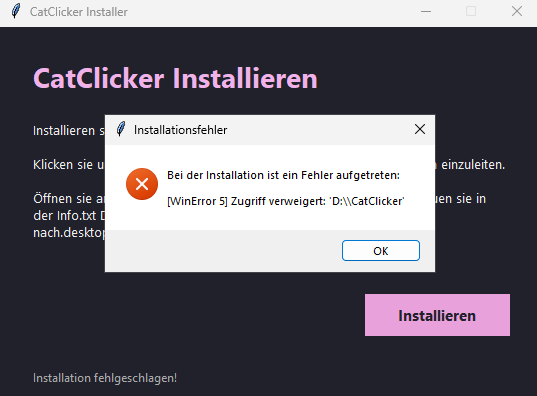
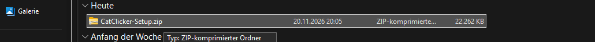
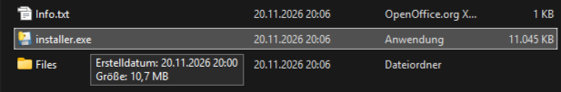
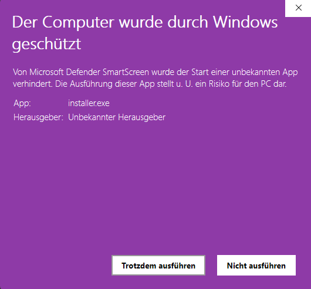
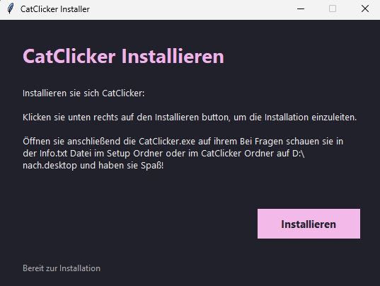
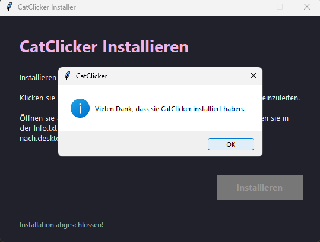
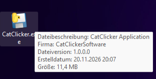

Fehler gefunden, schon dabei!

Was ist CatClicker?
CatClicker ist ein interaktives und unterhaltsames Spiel,
bei dem du ganz normal auf deiner Tastatur tippen kannst,
um Münzen zu verdienen.
Mit deinen verdienten Münzen kannst du verschiedene
Katzen kaufen und sie dir beim Tippen anschauen.
Wenn du gerade keine Katze sehen möchtest,
kannst du jederzeit die Option
„Keine Katze“ auswählen.
Infos zur Installation
Den CatClicker-Setup Ordner kannst du nach der Installation löschen.
Falls eine Nachricht von Windows Defender kommen sollte, ist das nur, weil keine kostenpflichtige Signatur für die .exe von dem Ersteller (CatClickerSoftware) bezahlt wurde. Klicke auf weitere Informationen und auch Trotzdem ausführen.
Zum Deinstallieren einfach den CatClicker Ordner auf D:\ löschen und CatClicker.exe von dem Desktop entfernen.
Nach der Installation kannst du außerdem auch den Ordner mit dem Installer löschen.
Ausführliche Anleitung
Extrahiere die .zip Datei

Öffne den extrahierten Ordner und öffne Installer.exe

Fals eine Windows defender Nachricht kommt auf Trotzdem ausführen klicken

Bei dem Installer auf den Installieren button klicken

Wenn die Installation erfolgreich war, sollte diese Nachricht angezeigt werden, klicken sie "ok"

Öffnen sie nun CatClicker.exe auf ihrem Desktop
